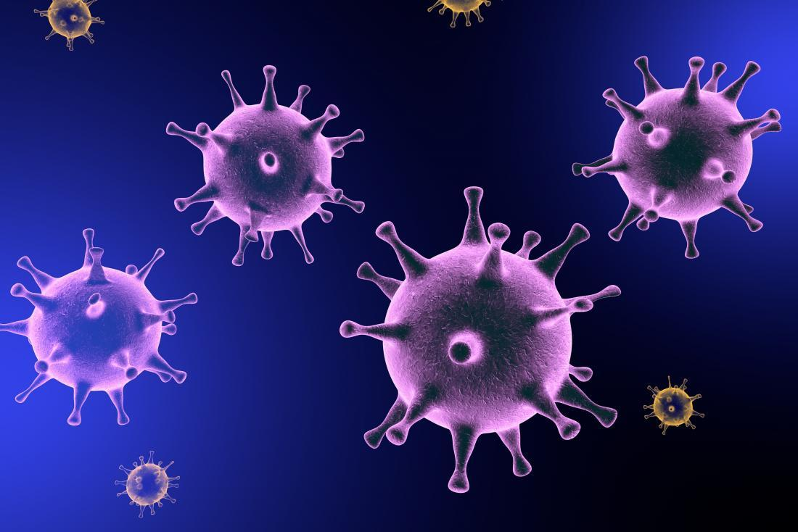

<div class="container pt-3">

    <span class="col-md-3">
        <p> 

            Coronavirus India Live updates: In his address to the nation, Prime Minister Narendra Modi announced a
            special Rs 20 lakh crore financial package for a self-reliant India besides hinting at further expansion of
            nationwide lockdown with more ease in restrictions. He also said that India needs to be self-sufficient to
            overcome the coronavirus crisis.

            “Special economic package will have emphasis on land, labour, liquidity and laws. Special economic package
            is for our labourers, farmers, honest tax payers, MSMEs and cottage industry,” PM Modi said, adding that
            Finance Minister Nirmala Sitharaman will deliberate on the implementation of the package in coming days. He
            also said that India has ramped up its PPE manufacturing capacity in the wake of the Covid-19 crises and is
            now producing over two lakh PPE kits and N95 masks daily.

            With India reporting 3,604 coronavirus cases in the last 24 hours, the total number of infections Tuesday
            crossed the 70,000-mark to reach 70,756 including the 22,454 people who have been treated and discharged so
            far. The death toll also rose to 2,293. According to the Home Ministry, the recovery rate stands at 31.15
            per cent.

            Meanwhile, the Railway services starting Tuesday will run to full capacity, while leaving it up to the
            passengers to maintain social distancing on board, and to states to decide the protocol on arrival. More
            than 54,000 passengers made reservations for their train journeys within three hours after the Indian
            Railways opened booking on Monday. Also, sources have told The Indian Express that Aarogya Setu app is a
            must for people travelling by trains. Passengers who don’t have it will be asked to download even after
            reaching the station.

            Globally, 41,781,56 people have been infected so far, with deaths exceeding 286,000. According to Johns
            Hopkins data, the United States continues to be the worst-affected country with 79,894 fatalities and
            1,339,819 cases, followed by United Kingdom (32,140 deaths and 224,327 cases) and Italy (30,379 deaths and
            219,814 cases).
        </p>
    </span>

</div>